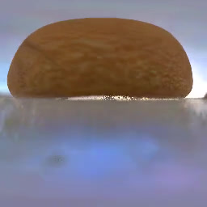
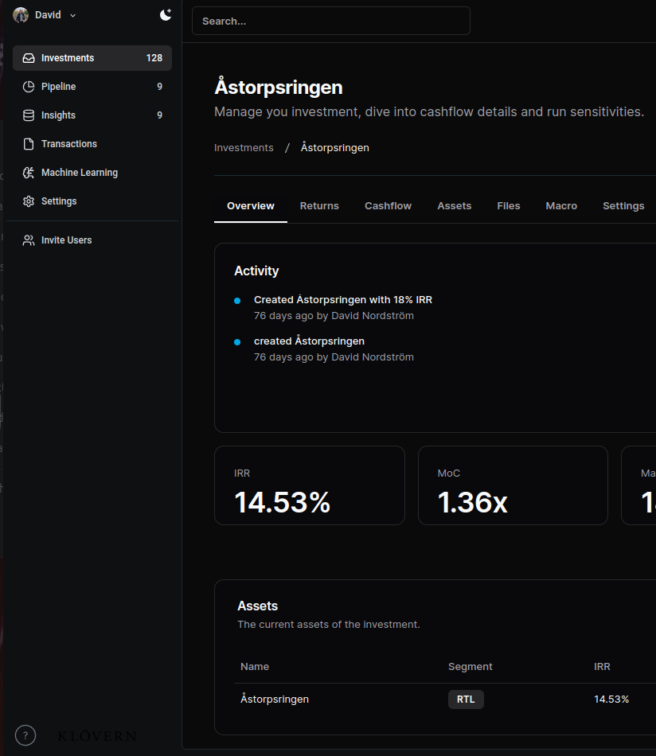
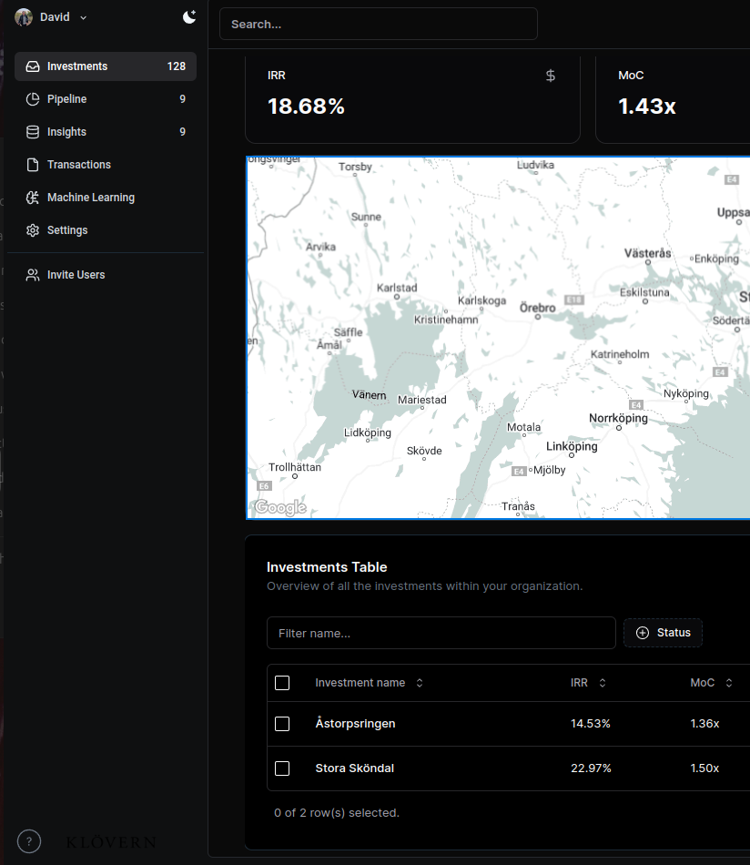

|
David Nordström I'm a PhD student at Chalmers University of Technology in Geometric Deep Learning at Fredrik Kahl's Computer Vision Team. At Google I've worked on Glass, Lens Blur, HDR+, VR, Portrait Mode, Portrait Light, and Maps. I did my PhD at UC Berkeley, where I was advised by Jitendra Malik. I've received the PAMI Young Researcher Award. |
EducationI'm interested in computer vision, deep learning, generative AI, and image processing. Most of my research is about inferring the physical world (shape, motion, color, light, etc) from images, usually with radiance fields. Some papers are highlighted. |
|
|
Visiting Student
UC Berkeley 2024-08-01 - 2024-01-01 |
ResearchI'm interested in computer vision, deep learning, generative AI, and image processing. Most of my research is about inferring the physical world (shape, motion, color, light, etc) from images, usually with radiance fields. Some papers are highlighted. |


|
EVER: Exact Volumetric Ellipsoid Rendering for Real-time View Synthesis
Alexander Mai, Peter Hedman, George Kopanas, Dor Verbin, David Futschik, Qiangeng Xu, Falko Kuester, Jonathan T. Barron, Yinda Zhang arXiv, 2024 project page / arXiv Raytracing constant-density ellipsoids yields more accurate and flexible radiance fields than splatting Gaussians, and still runs in real-time. |

|
CAT3D: Create Anything in 3D with Multi-View Diffusion Models
Ruiqi Gao*, Aleksander Holynski*, Philipp Henzler, Arthur Brussee, Ricardo Martin Brualla, Pratul P. Srinivasan, Jonathan T. Barron, Ben Poole* NeurIPS, 2024 (Oral Presentation) project page / arXiv A single model built around diffusion and NeRF that does text-to-3D, image-to-3D, and few-view reconstruction, trains in 1 minute, and renders at 60FPS in a browser. |

|
NeRF-Casting: Improved View-Dependent Appearance with Consistent
Reflections
Dor Verbin, Pratul Srinivasan, Peter Hedman, Benjamin Attal, Ben Mildenhall, Richard Szeliski, Jonathan T. Barron SIGGRAPH Asia, 2024 project page / arXiv Carefully casting reflection rays lets us synthesize photorealistic specularities in real-world scenes. |
|

|
Flash Cache: Reducing Bias in Radiance Cache Based Inverse Rendering
Benjamin Attal, Dor Verbin, Ben Mildenhall, Peter Hedman, Jonathan T. Barron, Matthew O'Toole, Pratul P. Srinivasan ECCV, 2024 (Oral Presentation) project page / arXiv A more physically-accurate inverse rendering system based on radiance caching for recovering geometry, materials, and lighting from RGB images of an object or scene. |
ProjectsI have made some fund coding projects :D |
|


|
Real Intel
Enterprise level real estate underwriting platform written with a Python backend (calculation engine) and a React frontend with a postgres database. Simplified demo. |
Miscellanea |


{kind=link}
|
This website is based on the source code of Jon Barron's website . |